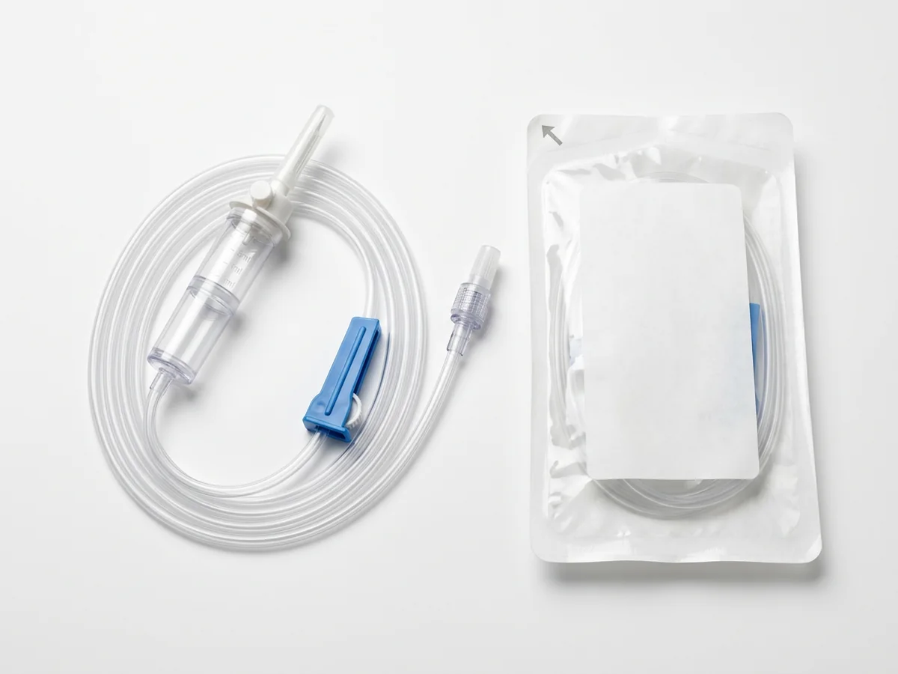
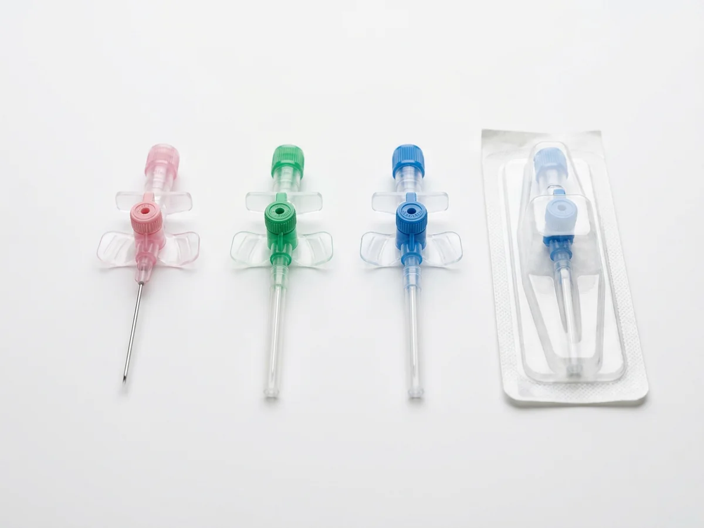
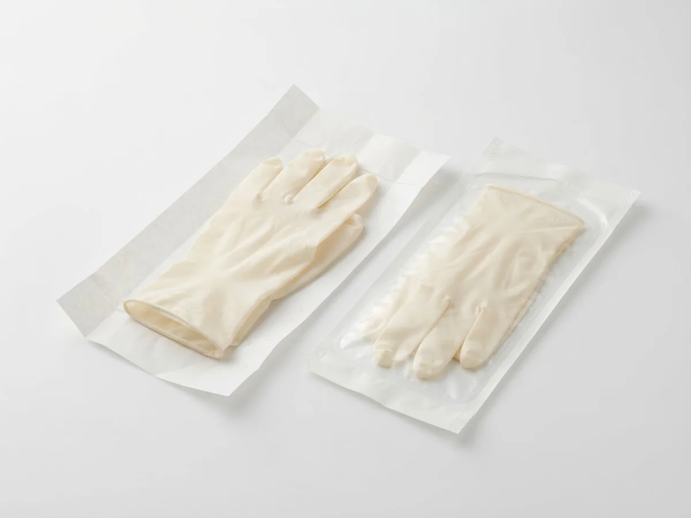
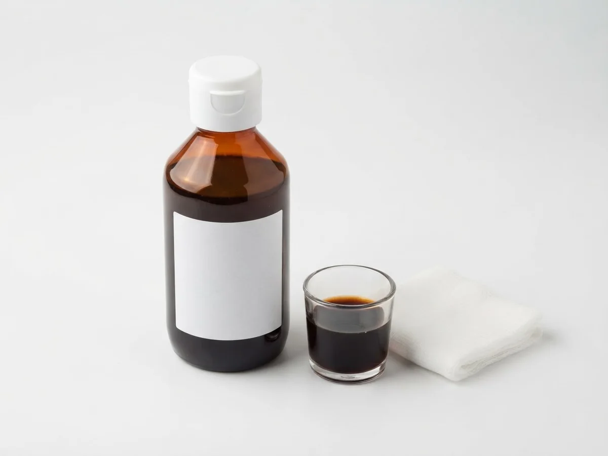
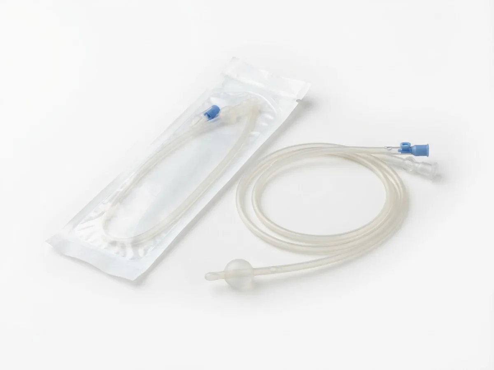
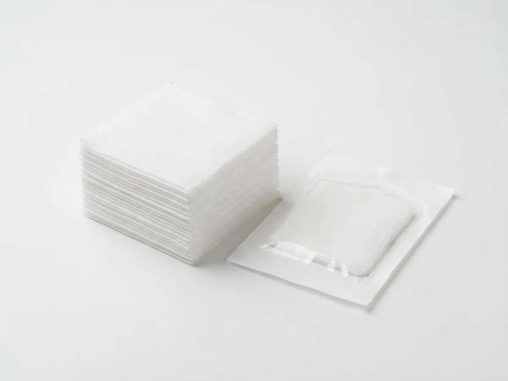
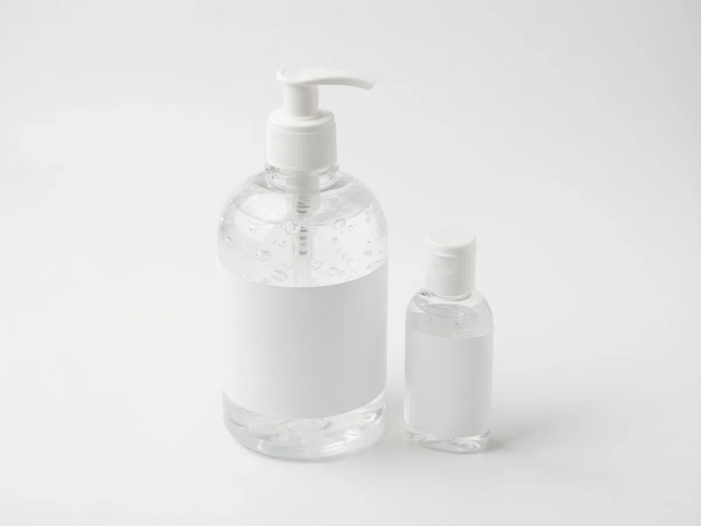

KHS-01
TIBBİ VE HASTANE SARF MALZEMELERİ
Temel tıbbi malzemeler.
Özenle tedarik edilir.
Khyber Surgical; hastanelere, kliniklere ve distribütörlere IV setleri ve kanüllerden eldivenlere, pansuman ve hijyen ürünlerine kadar her gün kullandıkları sarf malzemelerini sağlar. Altı kategoride on sekiz ürün; başlamak için tek bir talep yeterli.
- Hastane ve klinik tedariki
- Talep üzerine toplu miktarlar
- Kendi dilinizde yanıt

KHS-01IV infüzyon setleri
KHS-05IV kanüller
KHS-14Cerrahi eldivenler
KHS-11Povidon iyot (Betadine tipi) solüsyonFotoğraf görünümlü geçici görseller · Khyber Surgical ürün fotoğrafları eklenecek
Eksiksiz bir günlük ürün yelpazesi
İnfüzyon, damar erişimi, sondalar, yara bakımı, koruma ve hijyen tek katalogda.
Doğrudan doğru görüşmeye
Ürünü, miktarı ve teslimat ülkesini paylaşın; gerisini ekibimiz üstlenir.
Sizin diliniz, sizin tercihiniz
İngilizce, Arapça, Farsça veya Türkçe gezinin.
Bizi arayın
Khyber Surgical ÜRÜN YELPAZESİ
Altı kategori. On sekiz temel ürün.
Kategoriye göre gezinin, bir ürünü açarak tipik seçeneklerini inceleyin, ardından tüm ihtiyaçlarınız için tek bir talep gönderin.
4 ürün
İnfüzyon ve transfüzyon
Sıvı, kan ve ölçülü hacim uygulaması için setler ve bağlantı elemanları.
- IV infüzyon setleri
- Kan transfüzyon setleri
- Hacim ölçümlü (büret) setler
- Üçlü musluklar (3 yollu)
2 ürün
Damar erişimi ve enjeksiyon
Damar erişimi ve enjeksiyon için kanüller ve enjektörler.
- IV kanüller
- Enjektörler

2 ürünSondalar ve kateterler
Servis ve ameliyathane kullanımı için idrar ve nazogastrik sondalar.
- Foley sondalar
- Ryle sondaları (nazogastrik)

3 ürünYara bakımı ve antiseptikler
Pansuman ve cilt hazırlığı için gazlı bez, pamuk ve antiseptik solüsyon.
- Steril gazlı bez
- Hidrofil pamuk
- Povidon iyot (Betadine tipi) solüsyon
3 ürün
Eldivenler ve koruma
Nitril ve lateks muayene ve cerrahi eldivenler.
- Nitril eldivenler
- Lateks eldivenler
- Cerrahi eldivenler

4 ürünHijyen ve temizlik
Temiz ve güvenli tesisler için el hijyeni ve temizlik ürünleri.
- El dezenfektanı
- Sıvı el sabunu
- Fenollü zemin dezenfektanı
- Toz bezleri
ÜRÜN YELPAZEMİZ
En çok istenen ürünler
Müşterilerimizin en sık talep ettiği ürünlere hızlı bir bakış. Seçenekler ve teklif için ürünü açın.
KHS-05
KHS-07
KHS-09
Yara bakımı ve antiseptikler
Steril gazlı bez
Steril ve steril olmayan emici pamuklu gazlı bez kompresler ve rulolar.
KHS-12
KHS-15
Yapay zekâ ile oluşturulmuş geçici ürün görselleridir. Gerçek Khyber Surgical ürünleri ve özellikleri farklılık gösterebilir.
IV kanüller
DAHA İNSAN ODAKLI BİR YAKLAŞIMHer malzemenin arkasında
Her malzemenin arkasında
bir görüşme vardır.
Khyber Surgical, odaklanmış bir günlük sarf malzemesi yelpazesini ekibimizle doğrudan iletişimle bir araya getirir; böylece tedarik, ilk bakıştan son talebe kadar sade kalır.
Khyber Surgical’yi tanıyınİNCELEMEDEN BİLGİ TALEBİNE
Üç basit adım.
01
Ürünleri keşfedin
Satın alma ihtiyaçlarınıza uygun ürün kategorisini bulun.
02
İhtiyacınızı paylaşın
Miktarları, özellikleri ve teslimat ülkesini belirtin.
03
Ayrıntıları görüşün
Ekibimiz seçenekleri, belgeleri ve sonraki adımları teyit edebilir.
Tıbbi malzemeler. İnsani bağlar.İhtiyaçlarınız hakkında
İhtiyaçlarınız hakkında
konuşalım.
Tek bir ürün ya da daha kapsamlı bir ihtiyaç. Bir görüşmeyle başlayın.